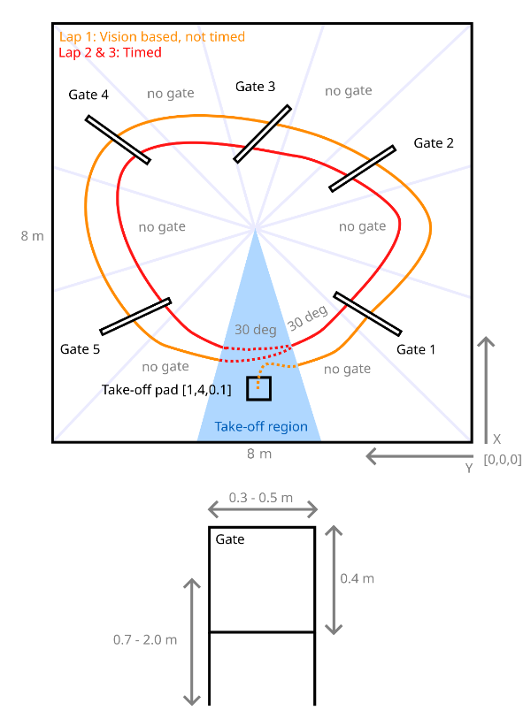
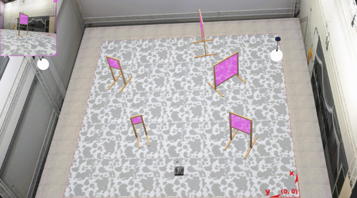
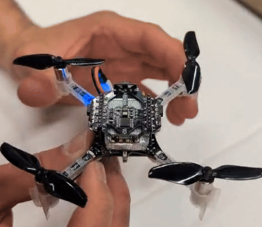
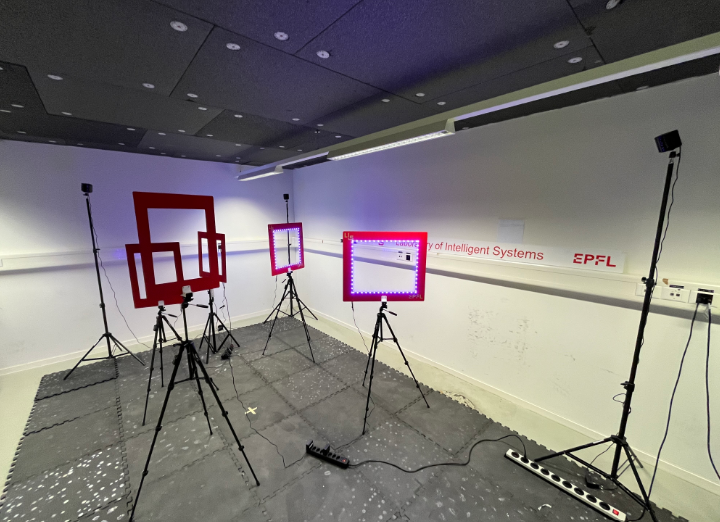

Webots · Individual task · MICRO-502
A complete gate-racing autonomy stack built from scratch: perception, estimation, state-machine navigation, spatial memory, and cascaded PID control, for a simulated Crazyflie competing across three laps in a randomized 8x8 m arena with five unknown gates.
The arena contains five square gates arranged roughly in a circle around [4, 4]. Gate positions, sizes, and heights are randomized each run. The drone must complete three laps counter-clockwise within a 240 s cutoff.

Each gate has a magenta 0.4 m patch at center height as the primary visual cue. The pipeline converts the camera frame to HSV, thresholds for the magenta range, cleans the mask with morphological operations, extracts contours, and filters candidates by area, aspect ratio, boundary margin, and pixel density. Each candidate is scored by size, center bias, and magenta density, and the highest score becomes the detection output, with angular offsets angle_x and angle_y derived from the 1.5 rad camera FOV.

A single detection is noisy. Recent estimates are buffered and the median XY and Z across the window becomes the stable gate estimate. Candidates are rejected if XY or Z spread is too large, if the gate falls outside the expected angular sector for the current gate index, or if it is geometrically implausible relative to the arena. When a detection is promising but not yet confirmed, the drone enters a cautious probe approach to get a better view before committing.
Converting a pixel detection to a world position requires drone pose and depth. The primary depth source is the range_front sensor, and when it reads the wall behind the gate, a fallback uses the known 0.4 m patch height and camera FOV to compute image-based depth. Gate XY is projected from drone position along the composite bearing (yaw + angle_x), with Z from the vertical angle offset. All estimates are clipped to valid arena and height bounds.
A finite-state machine drives top-level behavior. Transitions depend on detection confidence, timers, arena geometry, and simulator gate-credit callbacks. Arena geometry priors (five gates at radius 3.0 m around [4, 4], counter-clockwise) guide search direction, validate detections, and provide fallback estimates when vision is lost. If Search stalls, the controller replays the previous gate to reposition before retrying.
After each successful pass, the controller fuses the confirmed median estimate, close-range visual candidates, and observed pass-path midpoints into a gate memory point. Gates that are never reliably detected receive a fallback from arena geometry priors. For laps 2 and 3, each gate is replayed in three phases: approach point, gate-center dwell, and exit point. Setpoint jumps are step-size limited so the PID never demands extreme tilt. Missed gate credits trigger retries with small lateral and vertical offsets.
A [x, y, z, yaw] setpoint is converted to four motor PWM commands through four cascaded PID loops. Quaternion rotation projects inertial velocity into the body frame between the position and velocity stages.
| Loop | P | I | D |
|---|---|---|---|
| Position Z | 5.0 | 0.0 | 1.0 |
| Position XY | 2.0 | 0.0 | 0.0 |
| Velocity Z | 8.9 | 0.03 | 2.05 |
| Velocity XY | 0.6 | 0.0 | 0.025 |
| Attitude roll/pitch | 10.0 | 0.0 | 0.2 |
| Attitude yaw | 4.0 | 0.0 | 0.3 |
| Rate roll/pitch | 1.5 | 0.0 | 0.1 |
| Rate yaw | 0.02 | 0.0 | 0.001 |
XY velocity capped at 2.0 m/s, Z at 0.75 m/s. The Z cap was critical: large waypoint jumps could otherwise cause the drone to over-tilt and lose altitude authority between gates.
The controller completes the full pipeline: take off, detect and estimate five unknown gate positions from vision, fly through each counter-clockwise, return to start, then execute two faster memory-replay laps. It handles vision loss, false positives, oblique views, range-sensor failures, and missed gate credits through fallback logic at every layer.
Crazyflie 2.x Hardware · Group task · MICRO-502
The same gate-racing task deployed on a physical Crazyflie 2.x quadrotor. The simulation autonomy stack is adapted to run over a radio link using the Bitcraze Python library, with velocity commands replacing the custom PID cascade and onboard Kalman filtering replacing the perfect simulator state.


Moving from Webots to a real drone introduces a new class of constraints that the simulation cannot replicate.
The same HSV gate detection pipeline from simulation runs on the real onboard camera stream. The core approach is unchanged: convert to HSV, threshold for magenta, clean with morphological operations, extract and score contours. The key adaptation is threshold calibration for real-world lighting and tuning the scoring weights to account for noisier, lower-contrast images.
Real-world gate appearances vary more than simulation: lighting angle, exposure, and distance all affect how the magenta patch looks in HSV space. The confirmation layer becomes more important on hardware, as individual detections are less reliable and the median filter over multiple frames is the primary mechanism for producing stable gate estimates.
The mission FSM keeps the same phase structure as simulation, adapted to output velocity commands rather than position setpoints. Each phase produces a (vx, vy, yaw_rate, z) tuple sent directly to the drone hover commander. Position tracking uses the Kalman-filtered state from the onboard estimator, polled at 100 ms intervals.
The onboard Kalman filter (EKF) fuses IMU, optical flow, and barometer to produce stateEstimate.x/y/z and stabilizer.yaw, streamed to the ground station via the cflib log framework. The estimator is reset at mission start to clear drift from handling. Telemetry age is monitored continuously, and if state data goes stale beyond a threshold, the safety layer triggers an automatic landing.
On hardware, the custom 4-loop PID cascade from simulation is replaced by the Crazyflie onboard attitude and rate controller. The mission code sends high-level velocity setpoints via send_hover_setpoint(vx, vy, yaw_rate, z). The drone firmware handles all attitude stabilization internally, which simplifies the software stack and offloads the lowest-level control to a well-tested onboard system.
The drone connects over a 2.4 GHz radio link using the Bitcraze cflib Python library. Connection events (connected, disconnected, link lost) all have registered callbacks that update the safety state. Telemetry is logged at 100 ms intervals via a LogConfig subscribing to stateEstimate.x, stateEstimate.y, stateEstimate.z, and stabilizer.yaw.
A dedicated safety layer runs independently of the mission FSM. It monitors telemetry age and connection status on every control tick. If state data is stale for more than 1 s, or if the radio link drops, it immediately commands a controlled descent and stops all mission activity. This ensures the drone lands safely regardless of what the mission code is doing.
The stack successfully bridges simulation to a physical platform: the same perception and navigation logic runs over a live radio link, with the hardware-specific interface, safety layer, and real-world vision calibration handling the gap between a perfect simulator and a noisy real environment. The incremental approach (slow flights first, speed increased only once stability was confirmed) is reflected in the architecture, where conservative thresholds and safe fallbacks are built in at every layer.